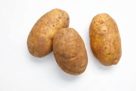

All About Potatoes
Potatoes are versatile, delicious, and one of the world's favorite root vegetables. Below are examples of how we display images of potatoes using HTML.
Example 1: Specifying Dimensions
This image uses the path Images/Potato.jpg. We have explicitly set the width to 300 pixels and the height to 200 pixels using HTML attributes.
A single russet potato on a wooden background
hjbkjbki

Example 2: Relative Path & Alt Text Importance
This image uses the path ./Potatoes.jpg (the ./ explicitly means "look in the current folder"). If the image fails to load, the browser will display the alt text instead so screen readers and users still know what belongs here.
A basket full of freshly harvested gold potatoes
Note: If you only specify the width (like we did here at 400px), the browser will automatically scale the height proportionally so the image doesn't look stretched!